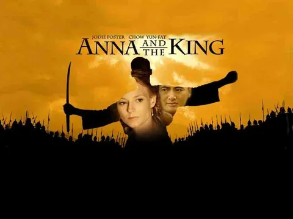

🍿 La cloroteca |
⤶ Volver al inicio |

Ana y el rey es un drama histórico sobre el choque cultural entre una maestra británica encargada de educar a los hijos del rey de Siam. Ella está enpedernida en mostrar la cultura inglesa, ya que eso los conectará al mundo, mientras que a pesar de ser considerado inferior, el rey demostrará su inteligencia y también enseñará un par de cosas a la mujer.
Es fantástico como hacen se relacionan ambos personajes, tienen verdadera química y es grandioso ver como interactúan. Además, los problemas políticos nos mantendrán pegados a la pantalla.
El final, aunque triste, cumple con su cometido. Es una película hermosa, que nos enseñará varias cosas de la vida.